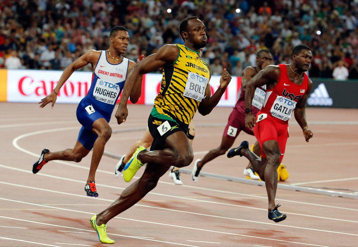

- ACASA
- ISTORIA
JOCURILE DE VARA
Atletism
Fii TU cel MAI IUTE! Arunca TU cel mai departe!
Sport olimpic din 1896
Atletism inseamna sa alergi mai rapid, sa sari mai mult sau poate sa arunci mai departe decat ceilalti.
Jocurile antice din Olimpia (Grecia) au inceput cu intreceri de alergare in care atletii purtau uneori armura.
Astazi, atletismul a ramas unul dintre cele mai populare sporturi olimpice; de la cursa de 100m pana la maratonul de 42 de km, de la aruncarea ciocanului la saritura in inaltime, atletismul este cel mai interesant eveniment, cu cei mai puternici sportivi.
Atletismul se imparte in 5 categorii: alergari, sarituri, aruncari, pentatlon si decatlon.
Alergarile includ:
• sprinturi (100m, 200m, 400m);
• proba de semifond (800m si 1.500m);
• proba de fond (5.000m si 10.000m);
• garduri (100m si 400m feminin, 110m si 400m masculin);
• stafeta (4 x 100m si 4 x 400m);
• proba de 3.000m obstacole;
• maraton;
• proba de mars (10km, 20km si 50km).
Sariturile si aruncarile
Atat baietii, cat si fetele, se pot inscrie la proba de saritura in lungime, triplu salt, saritura in inaltime, saritura cu prajina, aruncarea greutatii, a discului, a sulitei si a ciocanului. Sariturile cu prajina si aruncarea cu ciocanul au fost introduse ca proba pentru fete la Jocurile Olimpice de la Sidney din anul 2000.
Probele combinate
Pentatlonul (proba de feminin) si decatlonul (proba de masculin) sunt jocuri in care sportivii participa la mai multe probe pe durata a doua zile. Punctajul de la fiecare proba se aduna si, fireste, sportivul cu punctajul cel mai mare castiga.

Baschet
Sari intotdeauna MAI SUS!
Sport olimpic din 1936
Baschetul este unul dintre cele mai raspandite jocuri sportive din lume; se caracterizeaza prin finetea, precizia si fantezia exercitiilor, prin talia inalta si calitatile fizice deosebite ale sportivilor, toate acestea aflate intr-o lupta sportiva in care se cere spirit de echipa si de sacrificiu, inteligenta si rezistenta.
La inceput...
Baschetul a aparut in 1891, cand seful Departamentului de Educatie Fizica al Colegiului „Springfield“ din Massachusetts (SUA), Luther Gullick, impreuna cu profesorul de sport James Naismith au inventat un nou joc pentru a mentine in forma atletii in timpul sezonului de iarna.
Cu o minge obisnuita de fotbal, ei au convocat 18 tineri, au numit capitani pentru cele doua echipe a cate noua jucatori fiecare si i-au invatat un nou joc „Basket Ball“.
Primul meci s-a jucat cu doua jumatati de cosuri de fructe. Mingea de fotbal si cosul de fructe au dus la evolutia echipamentului.
Spre exemplu, la inceput cosul era inchis la fund, ceea ce presupunea ca cineva sa se urce pe o scara pentru a recupera mingea dupa inscrierea unui punct.
Cosul de fructe a fost mai tarziu schimbat cu un cerc metalic avand o plasa atarnata dedesubt, iar in 1906 s-a hotarat sa se desfaca plasa aceasta pentru ca mingea sa poata cadea.
In 1892, in Massachusetts, a fost introdus jocul de baschet feminin, care nu este atat de popular, poate si pentru ca de la intrarea lui in programul olimpic, in 1976, medaliile s-au impartit intre SUA, Rusia si Commonwealth.
Regulile jocului
Baschetul, ca proba olimpica, se joaca pe durata a 4 perioade (sferturi) de cate 10 minute. Daca meciul se incheie la egalitate, urmeaza 5 minute de prelungiri.
Turneul se desfasoara cu cate 12 echipe (masculin si feminin), fara a lua in considerare tara gazda. Un joc de baschet are loc intre doua echipe a cate 5 jucatori pe teren fiecare.
Scopul fiecarei echipe este sa bage mingea in cosul adversarilor si sa incerce sa impiedice cealalta echipa sa inscrie.
Echipa care inscrie cele mai multe puncte la terminarea timpului de joc va fi invingatoarea meciului respectiv.
Mingea poate fi pasata, aruncata, lovita, rostogolita, driblata, in orice directie. Punctajul se obtine din aruncarea mingii de baschet prin inelul cosului; linia de 3 puncte marcheaza limita (6m distanta) de 3 puncte/ aruncare, iar aruncarile reusite din interiorul „semicercului“ se puncteaza cu cate 2 puncte.
Fotbal
TU si ECHIPA TA puteti fi campioni!
Sport olimpic din 1900
Fotbalul este un sport care starneste pasiuni in toata lumea, are un imens succes, in special in randul tinerilor si a cucerit fani peste tot, indiferent de cultura, rasa si varsta. La 26 octombrie 1863 ia fiinta in Anglia prima asociatie de fotbal si primul regulament de joc. In prezent, exista peste 200 de Asociatii Nationale de Fotbal afiliate.
La inceput...
Originile fotbalului se afla undeva in urma cu peste 2000 de ani. In 2004, FIFA (Fédération Internationale de Football Association) a recunoscut China ca fiind locul de nastere al fotbalului. In jurul anului 200 i.e.n. chinezii jucau un sport asemanator numit „cuju“.
Regulile au evoluat cu timpul, astfel ajungandu-se la sportul de astazi.
Istoria fotbalului nu este pe deplin clarificata, dar se pare ca jocul, asa cum il stim noi astazi, provine din Anglia secolului al XIX-lea.
Regulile jocului
Fotbalu este un sport care se disputa intre doua echipe alcatuite din cate 11 jucatori fiecare. Se joaca cu mingea pe un teren dreptunghiular, acoperit cu iarba, cu cate o poarta la fiecare capat. Scopul jocului este de a inscrie goluri introducand mingea in poarta adversarului.
In afara portarului, ceilalti jucatori nu se pot folosi de maini pentru a manevra mingea. Totusi, nici el nu are voie sa faca acest lucru in afara locului de pedeapsa (careul de 16 metri) din fata portii sale.
Castigatoarea meciului este echipa care a inscris mai multe goluri la incheierea partidei.
De multe ori este cunoscut si sub numele de soccer, intrucat cuvantul fotbal se refera si la alte sporturi asemanatoare (fotbal american, fotbal australian etc.).
Echipamentul de baza al jucatorilor este format dintr-un tricou, pantaloni, ciorapi (jambiere) si aparatoare. Jucatorilor le este interzis sa poarte altceva ce ar putea fi periculos pentru ei sau pentru alt jucator (inclusiv bijuterii sau ceasuri).
Un anumit numar de jucatori pot fi schimbati in timpul unui joc. Numarul maxim de inlocuiri, in meciurile internationale si la nivel de ligi nationale, este de 3. La alte niveluri acest numar poate varia.
Motivele cele mai intalnite pentru o schimbare sunt accidentarile, oboseala, schimbarile tactice sau tragerile de timp pe final de joc.
La nivelul seniorilor, un jucator inlocuit nu poate reintra in joc.

Handbal
Paseaza, dribleaza si fii atent la adversar! Poti fi TU cel care PUNCTEAZA DECISIV!
Sport olimpic din 1936
La inceput...
Handbalul si sporturile inrudite cu acesta s-au practicat de mii de ani peste tot in lume, insa abia in 1890 este introdusa varianta moderna a acestui sport de catre germanul Konrad Koch, iar in 1911, danezul Frederik Knudsen a stabilit regulile pentru jocul in aer liber.
Handbalul a castigat in popularitate dupa Primul Razboi Mondial, cand a devenit un sport obisnuit in scoli, licee si universitati.
Primele campionate mondiale de handbal au avut loc in 1938 - la masculin si in 1949 - la feminin. Prima varianta in sala a handbalului a fost introdusa in 1972, ca un sport intre doua echipe de cate sapte jucatori, aceasta formula pastrandu-se pana in prezent.
Regulile jocului
Handbalul este un joc destul de rapid intre doua echipe a cate 7 jucatori, care pot pasa, arunca, prinde mingea si dribla, folosind o minge de dimensiuni reduse.
Jocul se desfasoara pe durata a doua reprize de cate 30 de minute, cu o pauza de 10 minute.
Handbalul este un joc de echipa, bazat pe viteza de deplasare si de executie a jucatorilor. Acestora li se pretinde o inalta pregatire atletica, forta si rezistenta, gandire tactica si o perfecta armonizare in cadrul echipei; ei trebuie sa introduca mingea in poarta echipei adverse si sa-si apere propria poarta de atacurile adverse.
Mingea se joaca cu mainile, dar este permisa si atingerea ei cu orice parte a corpului (cu exceptia picioarelor, de la genunchi in jos); portarul poate folosi si picioarele pentru a-si apara poarta.
Gimnastica
Stii sa faci PODUL?Poti sa iti faci PROPRIUL tau EXERCITIU la SOL!
Sport olimpic din 1896
Federatia Internationala de Gimnastica (FIG) a fost fondata la data de 23 iulie 1881. Gimnastica a format 2 mari discipline olimpice: gimnastica artistica si gimnastica ritmica.
Gimnastica artistica
Prin imbinarea perfecta a atletismului cu estetica, gimnastica se numara printre cele mai frumoase sporturi de la Jocurile Olimpice.
Nota de 10 a perfectiunii a fost intruchipata de Nadia Comaneci, la Jocurile de la Montreal, din 1976. Ea a fost prima gimnasta din lume notata cu aceasta nota creand un moment de neuitat pentru cei mai multi admiratori ai gimnasticii. Gimnasta romanca de numai 14 ani (1976) a atins ceea ce parea imposibil: de 7(!) ori nota 10 la Jocurile Olimpice de la Montreal (Canada). A fost un eveniment atat de neasteptat incat tehnologia de afisare a scorului era setata doar pentru 3 cifre. Notele de 10 ale Nadiei au fost afisate: 1.00.
Inceputurile gimnasticii le putem situa cu mult timp in urma, in Grecia Antica, Roma Antica, Persia si India, acolo unde disciplinele urmareau pregatirea si selectarea tinerilor barbati pentru lupte.
In intrecerile artistice (la aparate), sportivii se intrec la sol, la cal cu manere, la inele, la sarituri, la paralele inegale sau egale si la barna.
Gimnastica ritmica
Gimnastica ritmica moderna, sau artistica, dupa cum era denumita mai demult, este o alta ramura a gimnasticii sportive. Ea si-a facut loc pe taramul competitional mult mai tarziu decat gimnastica sportiva la aparate.
Fiind un sport mai delicat si care presupune multa gratie este practicat doar de fete. Ca si la gimnastica sportiva, exercitiile sunt impuse si liber alese. Obiectele folosite sunt: mingea, cercul, coarda, panglica, esarfa.
O importanta deosebita o are acompaniamentul muzical, iar toate exercitiile si miscarile trebuie sa fie in concordanta cu stilul si ritmul muzicii.
Tenis
Nu lasa mingiile sa scape! Poti FI CAMPION!
Sport olimpic din 1896
Tenisul este un joc sportiv care se impune prin frumusetea lui. Miscarile sportivilor au gratie si ritm, sunt armonioase si precise in ciuda efortului mare pe care il depun. Frumusetea sa consta in faptul ca este accesibil la orice varsta, partenerii de joc se pot alege in functie de preferinte sau nivel de pregatire. Tenisul presupune calitati ca: perspicacitate, curaj, indemanare, reflex, viteza, forta etc.
La inceput...
Primele mentionari despre inceputurile acestui sport atesta existenta sa in secolul al XII-lea. Se presupune ca tenisul s-a jucat mai intai la curtile regilor Frantei si Angliei. Raspandirea sa s-a datorat inventiei cauciucului, care a permis ca mingea elastica sa fie jucata pe orice teren si nu numai in sali, unde se juca cu mingi de piele umplute cu par si calti.
Din anul 1870, tenisul a inceput sa-si desavarseasca forma pe care o cunoastem si noi in prezent. A fost numit initial tenis de camp, spre a-l deosebi de cel vechi numit „jocul cu palma“.
Regulile jocului
Cuvantul „tenis“ vine de la cuvantul francez „tenez“ (tine!) cu care jucatorii isi anuntau adversarii ca arunca mingea pentru serviciu si pe care englezii, in secolul XV, l-au numit „tennis“. Jocul se desfasoara intre 2 jucatori (simplu) sau 4 (dublu). Mingea este trimisa in spatiul de serviciu al adversarului de catre un jucator, iar daca aceasta nu este returnata in mod regulamentar, se obtine un punct.
Punctajul se face astfel: primul punct se noteaza cu „15“, al doilea cu „30“, al treilea „40“, iar cu cel de-al patrulea se obtine un „ghem“. In situatia de 40-40 (egalitate) sunt necesare doua mingi castigate consecutiv. Cel care castiga 6 ghemuri (cu o diferenta de 2 ghemuri fata de adversar), castiga un set. In cazul mentinerii egalitatii de 6 ghemuri la 6, se va juca „tie break“, unde castiga cel care ajunge primul la 7 puncte.
La Olimpiada
Tenisul a facut parte din cele noua discipline sportive originale, in 1896, la Atena. In 1924, a fost scos din programul olimpic si a ramas la forma de meciuri demonstrative pana in 1984; demonstratiile tenismenilor erau coplesitoare. Din aceasta cauza si datorita frumusetii sale, tenisul a fost reintrodus la Jocurile Olimpice de la Seul (1988), prin sprijinul Presedintelui Comitetului International Olimpic, Juan Antonio Samaranch.
Natatie si polo
Si TU poti fi cel mai bun inotator! INCEARCA!
Sport olimpic din 1896
Inainte ca inotul sa aiba reguli clare si o federatie care sa faca aceste reguli si sa se asigure ca ele sunt aplicate, Jocurile Olimpice au inclus o varietate de evenimente mai putin obisnuite, de genul „inot subacvatic“ (1900), „inot cu obstacole 200m“ (1900) si „plonjare in adancime“ (1904).
Pana sa apara primul bazin olimpic, concursurile de inot s-au desfasurat in ocean (1896), raul Sena (1900) sau pe un mic lac din Saint Louis, SUA (1904). De atunci insa, inotul olimpic a evoluat foarte mult, ajungandu-se la controlul temperaturii in bazinele de 50m, sisteme care opresc formarea valurilor sau linii de marcaj impotriva agitarii apei, fiind in prezent o disciplina fascinanta!
La inceput numai barbatii puteau concura, insa din 1912 au fost incluse si probele feminine, astfel ca astazi, atat barbatii, cat si femeile participa la nu mai putin de 16 probe fiecare. Intrecerile libere acopera distante de la 50m pana la 10.000m.
Proba de 800m este destinata exclusiv femeilor, iar proba de 1.500m se adreseaza doar barbatilor.
Intrecerile de „spate“, „bras“ si „fluture“ acopera distante de 100m si 200m.
La fiecare proba exista maxim 8 competitori; probele preliminare de 50m, 100m si 200m sunt urmate de semifinale si finale unde important este timpul de parcurgere al cursei.
Polo
Polo este asemanator unui joc de fotbal, doar ca se joaca in apa. Parintele acestui sport este considerat William Wilson, nascut la Londra, din parinti scotieni, in anul 1844. Ca membru al London Swimming Club, plictisit de monotonia antrenamentelor de inot si de cele de „swimming exhibitions“ (demonstratiile de inot), a aparut intr-o buna zi cu o minge de fotbal pe care a aruncat-o in apa. Fiecare a inceput sa inoate dupa minge, s-o prinda, s-o paseze celuilalt. Era ceva cu totul nou si joaca a prins repede, iar inotatorii si-au dat seama ca, pentru moment cel putin, acela era cel mai bun divertisment.
De-a lungul a 4 reprize de cate 7 minute, sportivii nu au voie sa atinga fundul bazinului si nici peretii, si inoata, in timpul unui joc, pe o distanta de circa 5 kilometri. Deci, ca sa poti sa joci polo trebuie sa ai tehnica si rezistenta unui bun inotator, finetea unui handbalist care paseaza, dribleaza si trage la poarta, precum si forta unui rugbist de a pastra mingea in mana.
Pana la sfarsitul secolului 17, sportul a devenit destul de popular in Europa si America de Nord pentru ca, in 1900, sa fie inclus in programul Jocurilor Olimpice de la Paris.
Desi este considerat un joc dur si dificil, incepand cu Jocurile Olimpice de la Sydney (2000), a fost introdusa si proba de polo feminin, oferind o noua fata acestei discipline.